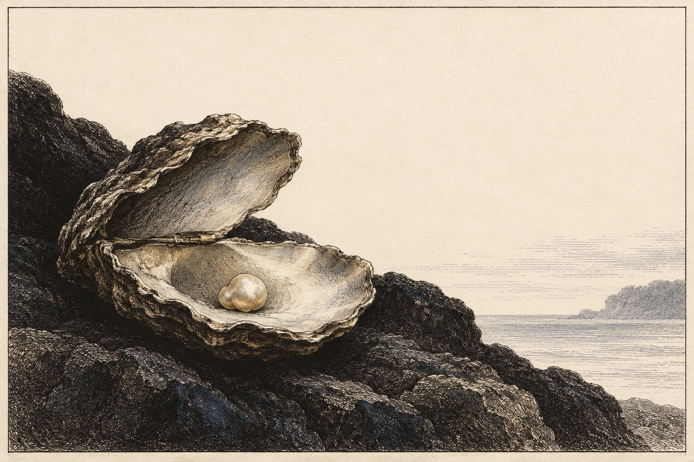

Part IV
Chapter 20: Pearls in the Abyss
Estimated reading time: 15 min
The Path of the Dragon often spirals downward. We leave the surface illumination to enter the Shadow—the hidden terrain of repressed fears, potent desires, unacknowledged wounds, and the selfish, resentful, avoidant, or harmful material your identity would rather not own.
This descent confronts the totality of your being: your pain, your capacity for destruction, your hunger for power, and the unlived force still waiting in the dark. We enter the darkness to reclaim the energy trapped within it, whether through embodied integration or the deep click of recognition that releases what no longer needs to be held. What was held in darkness may first return as a grief you can bear to feel, an appetite you had learned to hide, or a voice finding its way back into speech.
Stay sober and plan time and support for recovery after the practice.
If you lose orientation to place or time, cannot make a simple choice or stop clearly, or cannot use grounding or contact support—or if the work blurs into dissociation, freeze, or reenactment—stop experiential work. Read for orientation only. Resume the practice only once stable present-time orientation has returned and with experienced, grounded support.
The Inward Descent
This work is fundamentally internal. You turn toward the somatic roots of limiting patterns to loosen their grip. Freedom comes from bringing this material into conscious relationship, never from acting it out.
Insight can go all the way down. Action remains bounded by ethics.
Keep the Axis of Being close here. Vertical depth must return through the Form Body; horizontal life asks how that depth moves through hands, belly, voice, boundary, and relationship. A towel twist or pillow squeeze can give the charge finite, bounded action, but does not by itself make the crossing safe.
On an ordinary Tuesday, the Shadow can arrive as a tight jaw after a sharp message, the urge to “win” a disagreement, the reflex to go numb, or the flash of contempt in traffic. The abyss opens there too: one breath, one orienting glance, one honest sensation named, so it becomes workable.
Let the descent follow the charge itself. If grief is live, move through the grief gates below. If taboo charge is live, go slowly with the transgression protocol. Aftercare closes the practice. Before acting on material from the descent, return to Ethics at the Edge.
Dark Emotion as Gate
Some tantric and left-hand frames carry a fierce insight: nothing in the psyche is wasted, not even pain. Here, that insight must stay precise. Pain is not holy by default. Feeling is not proof; dark emotion is gate, not permission.
Jealousy may reveal where trust in your own worth or belonging collapsed, or where a real relational breach needs to be named. Control may hide fear of surrender, uncertainty, or dependence. Resentment is often a swallowed no, asking where a boundary or honest desire was not spoken directly.
Possessiveness may hide the terror that loss would mean annihilation. Desperation may be the heart starving for its own presence and trying to feed through another. Numbness may be too much feeling frozen without witness.
Anger may be boundary or dignity trying to return as direction. Shame may reveal where aliveness was condemned and power went underground. Grief may be love looking for a living form.
Sometimes the first opening is simply that a loss becomes particular again: the sound of a laugh, the empty place at a table, the words that never reached someone. Grief can be received before it must become anything else. A voice long silenced can begin as a few words spoken in private; desire can become available to feeling before you know what place it has in your life.
Ways Down, Ways Back
The abyss asks for more than courage. These six practices keep the descent grounded in the body. Choose only what your present capacity can hold. When intensity rises, the work runs long, or trauma material comes close, aftercare is part of the return.
1. The Mirror of Sustained Awareness
Turning mindfulness into an unwavering gaze.
Use this for radical honesty: keep the practice brief and bounded as you stay with one live pattern without flinching or fixing. Settle into breath-based meditation, track one sensation in the Form Body, and name its texture, location, heat, and movement. A spike in activation or slip in orientation ends the focused tracking; shift to open-eyed orienting. Close with one long exhale, a brief scan of the room, and ordinary contact through feet, seat, and surroundings.
2. The Polyphonic Dialogue
Giving voice to the exiled.
This is internal parts work kept simple enough to stay honest.
The goal is not to make exiled parts obey the functioning self. Each voice is a territory of memory, need, protection, or unfinished defence. Dialogue becomes integration only when the witnessing self stays resourced enough to listen without surrendering the room.
Keep it internal and brief at first. Write only while the witnessing self stays resourced. Name the parts you are inviting (Inner Child, Critic, Rage, Fear) and give each a distinct voice. Let the hidden rebel challenge the inner critic; let fear answer rage in short, honest lines.
Listen for the need beneath each stance. Close while you are still oriented: thank each part, declare the dialogue over, and finish with one round of the Somatic Triad—Exhale → Orient → Sensation—and one ordinary grounding action.
If dissociation appears or the exchange escalates, stop writing. You do not have to finish the dialogue or settle every part before stopping. Turn to ordinary surroundings; if orientation does not return, seek experienced, grounded support.
3. Aspecting
Giving the unseen a place in the room.
This is dialogic ritual in its simplest form: giving one inner figure a place, a voice, and a witness.
Meet one figure briefly while the witnessing seat remains clear. Use a chair, pillow, or clear place in front of you. Name the figure (Inner Child, Protector, Grief, Critic, abandoned self) and speak to it in short, honest lines. Shift into its place to answer. Then return to your own seat and let the witness name what was revealed, needed, or misunderstood.
While still oriented, close by thanking the figure, ending the dialogue, and returning to your own seat. Touch the chair, floor, or your sternum; orient visually; say your own name aloud; then do one ordinary grounding action.
Any blur in your sense of self, loss of the room, compulsion, or difficulty returning to the witnessing seat ends the role-shifting. Stop without another exchange or an obligation to complete the closing sequence. Turn to ordinary surroundings; if orientation does not return, seek experienced, grounded support.
4. Embodied Ritual
Moving energy through form.
Use this to transmute difficult energy through the Eros Body, rather than analysing it intellectually. Choose one outlet you can stay present with and keep the practice brief and titrated: movement, vocalisation into a pillow, expressive art, or imaginal psychodrama. Keep attention on sensation, breath, and impulse in the body; let energy move in waves, simple and physical. If catharsis becomes forced, numbness rises, or contact with the room slips, end the expression. Close with slow, unforced exhales, water as needed, and quiet orienting until ordinary contact returns.
5. Ethical Discernment
The check against distortion.
Before acting on charged material from the descent, pause. Let urgency settle enough for the Sage to become available, then ask: “Does this serve wholeness?” and “Whom could this harm, and whose consent does it require?” If the answer is unclear, delay acting on the material and talk it through with someone grounded. Coercion, retaliation, and breaches of consent stop here. Choose the smallest proportionate next step—perhaps to wait, repair, set a boundary, or leave—and return to the body with one slow exhale. Immediate protection does not have to wait for calm.
6. Somatic Aftercare
Closing the circle.
Treat aftercare as part of the practice: begin with immediate landing, then continue with decompression and support matched to the intensity. Do the Somatic Triad: Exhale → Orient → Sensation, then add physiological signals of safety: warmth, hydration, food, and rest. Fatigue, weepiness, thirst, irritability, or extra sleepiness have many possible causes; they do not prove release or reorganization.
Keep the rest of the day simple and let actual needs guide aftercare. Severe, unusual, worsening, or medically concerning symptoms require medical care. Close with one ordinary task (shower, walk, dishes) to return to everyday rhythm.
The Gates of Grief
Grief is the solvent that dissolves the armor around the Shadow. It reveals core wounds and hidden needs. Held well, grief can break the heart open rather than apart: compassion deepens, bound energy releases, and what survived as pain can return as presence. Francis Weller’s Five Gates of Grief offers a map for this terrain.
Here the Dragon’s creation-and-destruction current becomes intimate. Grieving can bring you close to how much you loved, including what still has no answer.
1. Everything We Love, We Will Lose (Impermanence)
- Protective pattern: Fear of endings, clutching, control.
- The Practice: Meditate on impermanence. Write a private letter to what was lost. Perform a symbolic release.
2. The Places That Have Not Known Love (Wounded Parts)
- Protective pattern: Shame, self-rejection, unworthiness.
- The Practice: Compassionate dialogue with the shamed parts. With acute trauma, keep a grounded person present to help you stay oriented.
3. The Sorrows of the World (Collective Pain)
- Protective pattern: Numbness, cynicism, paralysis.
- The Practice: Tonglen, a Tibetan compassion practice: breathing in the reality of suffering, breathing out compassion, strictly within your Window of Tolerance, the range where you can feel without flooding or disappearing.
4. What We Expected and Did Not Receive (Unmet Needs)
- Protective pattern: Resentment, a sense of lack, the ache of chronic emptiness.
This gate grieves unmet needs, unfulfilled hopes, and the quiet disappointment of what should have arrived and did not.
- The Practice: Name the specific unmet need. Acknowledge the pain and the truth of what was missing. Explore how to meet that need now.
5. Ancestral Grief (Lineage)
- Protective pattern: Inherited trauma, family secrets, unconscious loyalties.
- The Practice: Respectful exploration of family history. Private rituals to honour the struggle of those before you and acknowledge what still echoes in you.
This gate touches the Dark Entangled: the unseen web of history, survival, silence, and inherited consequence that helped shape the present body. To grieve here is not only self-work. It is field-work at the roots.
Note on Shame: Shame imposed on aliveness is the jailer of the Shadow. It tells you that you are unworthy of your own grief and keeps hidden life locked in darkness. To alchemize shame, ask: “Who taught me this shame? Is it mine?” When real harm is yours, remorse belongs to the act and its consequences. Let it lead to repair and changed conduct, not a verdict on your whole being or lifelong penance. Shadow material brought into conscious relationship can add depth. The prison begins to open when what was condemned can return as honest power.
Transgression and Power
Here the descent reaches its most delicate intersection: transgression and power.
One edge needs special care:
- The Forbidden: Metabolizing the energy of taboos without acting them out.
For this edge, the Left-Hand Path functions as an ethical lens: how to touch taboo charge without making transgression into permission.
The Left-Hand Path: Taboo, Refusal, and Responsibility
The Left-Hand Path (LHP) and Right-Hand Path (RHP) carry different meanings across South Asian Tantric traditions and modern Western esoteric reinterpretations.1 Their histories and practices cannot be made interchangeable. Here the names offer a limited lens on two movements within a life: trusting inherited forms and questioning what those forms exclude.
In this abyss, what has been excluded can arrive hot: desire, anger, power, or a refusal long kept silent. The heat gives inquiry urgency, never permission.
Going against the grain can begin in curiosity. An unfashionable question, an unfamiliar art, an abandoned idea, or a desire kept outside respectable speech may lead somewhere the common road does not. Sometimes it reveals a possibility custom failed to recognize. Sometimes it reveals why a boundary exists. Sometimes the rabbit hole ends in confusion, and leaving it is what has been learned. Exclusion alone establishes neither truth nor error; what is found still needs examination.
For many, refusal is less like ritual transgression than disappointing a family instead of keeping a suffocating peace, ending a polite silence around a violated boundary, or speaking plainly at a shared table. The taboo is often closer to the kitchen table than the altar.
Order and rebellion can wind through a life like a helix. Refusal may disclose the value of discipline, expertise, hierarchy, or a promise kept. Life inside an order may reveal where protection has become control. A circle founded on rebellion can acquire its own orthodoxy. A person can question one convention while freely trusting another; no compulsory sequence ends in obedience or permanent revolt. Freedom to create needs discernment and form.
Exploration can remain intellectual, artistic, spiritual, or inward. Encountering a forbidden image does not oblige its enactment. Another person’s freedom remains a boundary of the inquiry. What matters is what survives patient examination and can enter life.
Internal Boundary Inquiry
The Dragon tests your discernment. Can you touch the fire without burning the house?
Many “forbidden” impulses—aggression, dominance, taboo desire—can carry vital life force twisted by conditioning or repression. If you simply suppress them, you lose the vitality. If you act them out, you cause harm. The third way is transmutation: extracting the raw charge and grounding it into the body.
Keep the boundary plain: stay with sensation and energy, not narrative or external action.
When that charge surges, give it bounded muscular expression without acting out the story, only while present orientation remains stable.
Readiness: Choose a low-risk outlet that keeps force away from other people: a towel twist, a pillow squeeze, or a controlled wall press. Do not strike hard surfaces.
Stop Signs: Loss of present orientation, flashback activation, rising dissociation.
Locate the Charge.
When the shadow impulse rises (e.g., a flash of aggression or taboo desire), notice it. Scan your Form Body to feel where the heat lives—your hands, your jaw, your pelvis.Isolate the Sensation.
Strip away the story (e.g., “I want to hurt someone”). Stay with the bodily mechanics: “My hands want to grip.” “My jaw wants to bite.”Press or Squeeze Within Limits.
Give this energy a physical outlet. Keep breathing throughout; do not brace or hold the breath.If it is aggression or grip, grab a towel or pillow. Twist and squeeze firmly, not at maximum effort, for no more than 20 seconds; then release fully. Repeat once or twice, keeping wrists and shoulders comfortable.
If it is dominance or power, stand facing a wall with hands flat. Press with sustained effort, not at maximum, for no more than 20 seconds while engaging core and legs.
Keep joints soft. Pain ends the movement. Spiralling rage or building pressure ends it too: release, look around the room, and wait for pressure to settle. Relief does not prove that anything has been discharged.
Reorient, Then Ask.
Release fully. Exhale, look around the room, and wait until ordinary contact returns. Then ask the energy: “What is your true name?” Receive any answer as a possible need, capacity, or image—not a verdict.Sometimes what the mind labels as “violence” is a protective surge seeking a clear boundary. Protection is not permission to harm. Sometimes “dominance” is a hunger for capacity: competence, agency, strength. Sometimes “taboo” is a longing for freedom: aliveness, choice, self-possession.
Integration.
When the physical wave subsides, test the offered name against history, evidence, consent, consequence, and the Compass of Ethical Discernment. If it holds, claim the underlying capacity: “I claim my protection.” “I claim my capacity.” Breathe that specific quality into your Serene Center, and let it settle before any outer move.
Aftercare: Exhale slowly and take in the room until ordinary contact returns; drink water as needed, then do something simple and ordinary (wash a dish, step outside, feel your feet).
Ethics at the Edge
The power liberated from the Shadow is neutral; how you wield it determines whether it becomes medicine or poison. The Dragon’s claws are not only for striking. They protect the boundary that keeps power answerable. Without that boundary, reclaimed force leaks into control, spectacle, or harm. Watch especially for these distortions:
- Spiritual bypassing: Using concepts like “It’s all a mirror,” “love and light,” or “that is just your ego” to avoid pain, harm, or repair.
- Projection and blame: Pasting newly discovered shadow traits onto everyone else. Real harms still count; blame distorts when it protects innocence instead of leading to truer action.
- Pain used as leverage: A Power-Under loop in which a story of suffering steers the field or claims exemption from truth, boundary, or repair. Pain still deserves care.
- Power-Over Disguised as Healing: Domination arriving as “truth-telling,” edgy initiation, forced catharsis, or permission to violate.
- The “challenging limits” excuse: Acting out harmful behaviour under the banner of “pushing edges.” Exploring taboos must lead to greater external care, not less.
- Spiritual ego: Protecting an image of being healed, advanced, or beyond harm. Real integration stays humble and unfinished.
When Intensity Overtakes the Relationship
High vulnerability and high intensity can open real healing currents, and they can also wake the oldest fractures in the Foundational Relational Matrix (Parent–Child–Sibling). When those parts activate and bleed outside the container, they can hijack the bond: a punitive Parent faces a pleading Child, rival Siblings keep score, and connection collapses into fusion or abandonment before the sovereign Lover can stay present.
High-charge states can lower defences and heighten suggestibility, especially where trance, catharsis, power asymmetry, or erotic charge is involved. These conditions can map onto attachment wounds and trauma imprints. Depth remains possible when the container tightens and de-rolling and aftercare become part of the practice.
De-rolling means explicitly ending the role or ritual state before you interpret what happened: name the end, return to ordinary names/voices, and reorient to the room.
Intensity that bleeds outside the container ends the practice. Take any immediate protective step, then stabilize (orient, hydrate, eat, move, sleep). Decisions about meaning, repair, and the future of the relationship can wait. The Dragon’s ethic is simple: the relationship is the altar. If the fire endangers the altar, bank the flames; distance or exit may be part of that protection.
When the charge returns, ask plainly: Does this protect clean contact, or does it feed a hidden drive for control?
The Pearl
After the descent, something once exiled may have a place in your life again.
The pearl is often small: a grief finally received, a voice that no longer disappears at the first sign of disapproval, a desire you can feel without recoiling from yourself.

The treasure is the life-force that survived in darkness, waiting to be retrieved without pretending the abyss was harmless.
The Dragon carries that recovered fire toward the world. There may be warmth in it as well as strength: affection where you expected only shame, or curiosity where life had narrowed to endurance.
What returns may need time to find its place. The pearl is that part, no longer left alone in the dark.
Kennet Granholm, “The Serpent Rises in the West: Positive Orientalism and Reinterpretation of Tantra in the Western Left-Hand Path”, traces the nineteenth-century Western reinterpretation of Indian left/right terminology and its later use in Western esoteric movements.↩︎